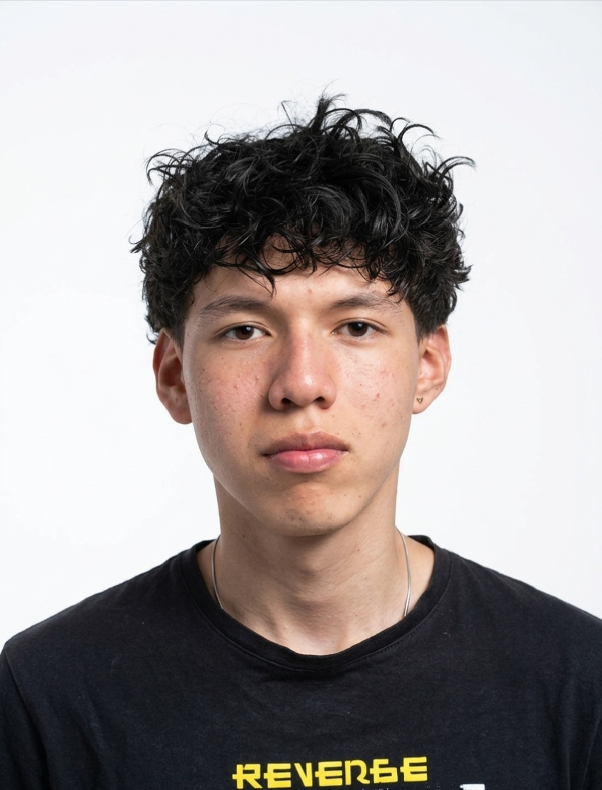

Quién soy
Presentación

Mi nombre es Fredy Santiago Rincón Africano y soy proveniente de Pesca, Boyacá. Desde joven he sentido curiosidad por la tecnología y por entender cómo funcionan los sistemas y las aplicaciones que usamos todos los días, y fue justamente esa curiosidad la que me llevó a interesarme por la programación. Por eso decidí ingresar al programa de Análisis y Desarrollo de Software del SENA, donde actualmente curso el tercer trimestre.
Mis metas a corto y mediano plazo son terminar satisfactoriamente el tecnólogo en Análisis y Desarrollo de Software, adquiriendo las bases técnicas y prácticas necesarias para desempeñarme como profesional en el área. A futuro me gustaría continuar mi formación académica ingresando a una ingeniería, ya sea Ingeniería de Sistemas o Ingeniería de Software, para profundizar mis conocimientos, especializarme y aportar con mi trabajo al desarrollo de soluciones tecnológicas innovadoras.